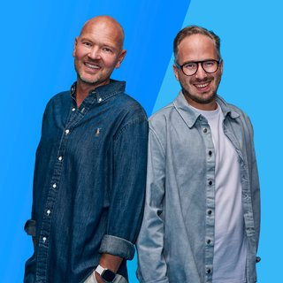

Oh Wat Een Nacht
00:00 - 04:00
Je hoort de beste muziek van Radio Veronica non-stop in Oh Wat Een Nacht!

Radio Veronica
00:00 - 04:00
Je hoort de beste muziek van Radio Veronica non-stop in Oh Wat Een Nacht!
Radio Veronica
04:00 - 06:00
Tussen 04:00 en 06:00 uur word je wakker met Lisanne Bronkhorst in The Warming Up.

Lisanne Bronkhorst
06:00 - 09:00
Opstaan met Ekdom in de Morgen betekent opstaan met een lach! Elke werkdag sleurt Gerard Ekdom je mee door de ochtend: van 06:00 tot 09:00 uur.

Gerard Ekdom
09:00 - 12:00
Marisa draait elke werkdag van 09:00 tot 12:00 uur de muziek waar jij van houdt in Goud van Oud!
Marisa Heutink
12:00 - 14:00
De beste playlist tijdens de lunch.

Sander Hoogendoorn
14:00 - 16:00
De Bonanza met Rob Stenders is elke werkdag van 14:00 tot 16:00 uur te horen op Radio Veronica. Jij bepaalt welke muziek er wordt gedraaid. Vraag jouw favoriete platen aan via de gratis Radio Veronica app.

Rob Stenders
16:00 - 19:00
De middagshow van Radio Veronica met Wouter van der Goes en Frank van 't Hof.
Wouter van der Goes & Frank van 't Hof
19:00 - 21:00
Elke maandag t/m donderdag 19:00 - 21:00 uur.

Martijn Muijs
21:00 - 23:59
Sluit je dag af met Frank van der Lende. Met live muziek, goede gesprekken en de fijnste muziek voor de late avond.
Frank van der Lende